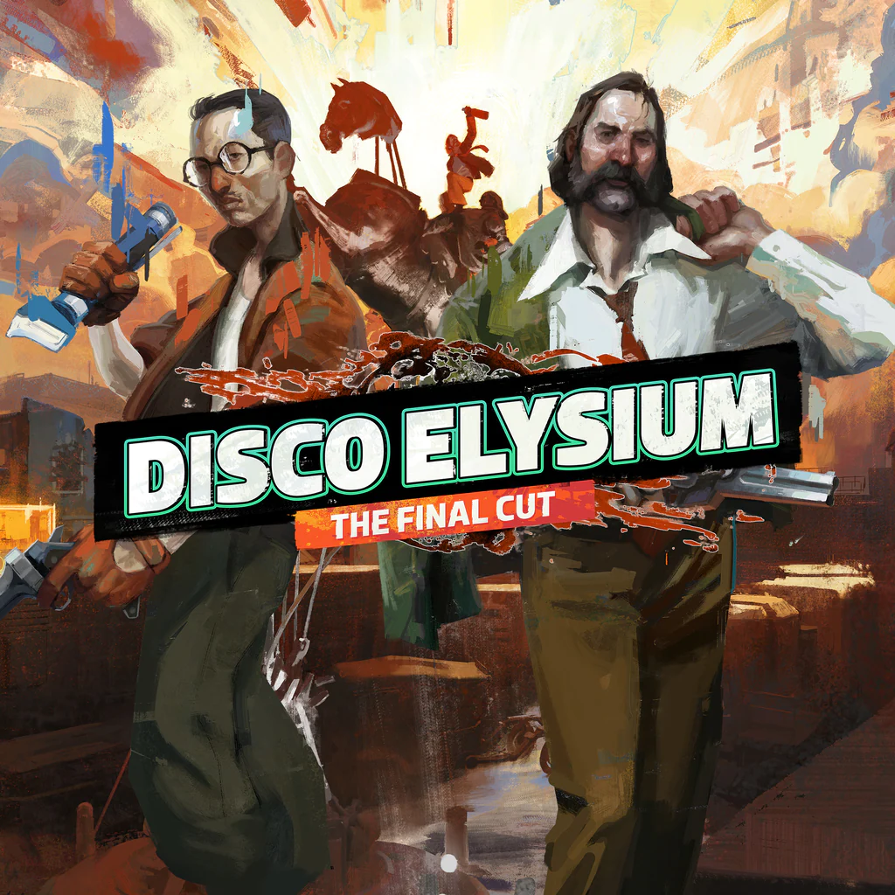
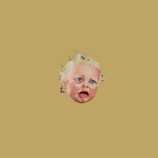

혁신적인 게임을 논하면 자주 리스트업 되는 게임중 하나입니다.
2005년에 발매가 되었고, 현대에 슈터(총쏘는것)에서 중요한 위치를
가지는 게임입니다.'조작성이 불편하지 않은데 미려한' 게임이에요.
게임을 만드는데 개발자들이 어떻게 고민했는지 궁금하긴 합니다.
숄더뷰에 카메라를 넣는 것도 '그냥 그게 가장 자연스러웠다.'라고
해서 넣었다는데, 게임 만드는데 짬이 생기면 그런 눈이 보이나
봅니다. 특유의 스토리에서 느껴지는 '펄프함'과 b급 감성이 너무 맘에
듭니다. 원라이너도, 캐릭터도 인상 깊고요.
한 5-6회차 정도는 플레이 했어요.

이것도, 좋아해요. 많이. 알코올 중독자이고 경찰인 주인공이 어떠한
섬에서 일어나는 살인 사건을 조사하는 게임입니다. 게임플레이도
혁신적이고, 자기혐오와 존재적인 질문들로 가득차 있는 스토리도
굉장히 상급이고, 로어(lore)도 상당히 흥미롭습니다. 그리고 그것을
묶는 RPG 게임플레이는 상당히 탁월합니다. 자기 성격대로 게임이
진행되요.
만약 해보실거면, 자신에게 솔직해지고, 자신이 하고싶은대로
하세요.
대개의 사람들은 경찰이라는 권위 앞에서 겸손해지곤 합니다. 여러분이
일을 저질러도 스토리는 진행되고, 어떤 방식이든 흥미로울겁니다.
다만, 글을 많이 읽어야 해요. 많이.

음악도 많이 듣습니다. 뭐를 고를까 많이 고민을 했는데, Micheal
Gira가 프론트맨으로 있는
Swans의 앨범 작품이에요. 우는
애기가 앨범 아트로 그려져 있는게 인상적이죠 해체후 25년만에 다시
재결합해 만든 'the seer'가 발매된뒤, 같은 맴버로 gira가 만들고
싶은 soundscape를 구현한 작품이에요. 광활하고, 숭고하고, 땀내가
납니다. 기존에도 하더놈이였기 때문에, 95년도의 해체 당시에 있었던
'soundtrack for the build'도 굉장한 앨범이지만, 그와 밴드의 역사를
담는데는 이 앨범이 가장 돋보이는 앨범입니다. 한 트랙은 37분 길이의
트랙도 있어요!